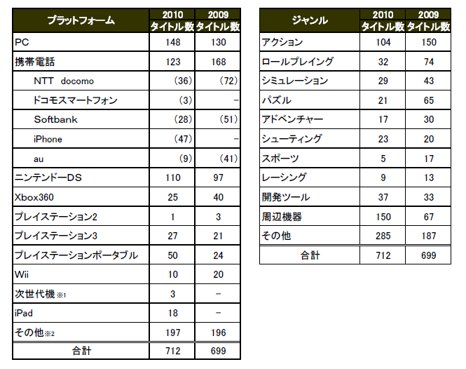

報道関係資料
PDF版はこちら » PDFをダウンロード
2010年9月16日
社団法人コンピュータエンターテインメント協会
日経BP社
テーマ：『GAME は、新章へ。』
14の国・地域から194の企業・団体が出展
出展タイトルの事前届出数は712タイトル
「東京ゲームショウ２０１０」は、『GAME は、新章へ。』をテーマに、社団法人コンピュータエンターテイン
メント協会（略称：ＣＥＳＡ、会長：和田洋一、所在地：東京都港区西新橋）の主催、日経ＢＰ社（社長：平田
保雄、所在地：東京都港区白金）の共催のもと、２０１０年９月１６日（木）～１９日（日）の４日間、幕張メッ
セ（千葉市美浜区）にて開催します。前半２日間はゲーム業界関係者と報道関係者のためのビジネスデ
イ、後半２日間は一般公開日です。幕張メッセの展示ホール１～８までの約５万４０００平方メートルを利
用いたします。
「東京ゲームショウ２０１０」は、「アジアNO.1の情報網羅性」と「世界最大規模のイベント」という中期ビ
ジョンを掲げ、従来から進めてきたBtoB分野の強化策を実施する一方、アジアを中心とした海外からの
一般ユーザーの来場促進を目的に、コスプレやゲーム大会などのBtoC分野の新しいイベント企画や主
催者展示を多数導入し、より充実した内容へと進化しました。
出展社は、国内１０３、海外９１、合計１９４の企業・団体です。日本をはじめ、アメリカ、アイルランド、
イギリス、オランダ、カナダ、韓国、シンガポール、台湾、中国、ドイツ、ブラジル、フランス、ブルガリアの
１４の国と地域からの出展となりました。出展総小間数は、１，４５８小間です。出展社数は昨年よりも１４
社、総小間数は９１小間増えております。
【東京ゲームショウ２０１０ 出展数】
（２０１０年９月１６日現在）
出展数： １９４社
出展総小間数： １,４５８小間
また、出展タイトルは、各出展社からの事前の届出数が合計７１２タイトルになりました。本年度はプラ
ットフォーム別に見ると、PC 用のタイトル数の増加が目立ちます。また、iPhone およびiPad、ニンテンド
ーDS や、プレイステーション・ポータブルなど、携帯ゲーム機用のタイトル数が飛躍的に増えているのも
本年の特徴です。
（※詳細はこちら（PDF）をご参照ください。）
出展ブース情報は、国内外から１６８の企業･団体から報告がありました。開催２０回目を記念する「東京ゲームショウ２０１０」に相応しく、興味深く、エンターテイメント性の高い出展内容が予定されております。
（※詳細はこちら（PDF）をご参照ください。）
【ジャンル別・プラットフォーム別出展タイトル数 一覧】

※１「次世代機」・・・今後発売予定のプラットフォーム
※2「その他」・・・上記項目に分類されない商品（書籍、ポスター、Tシャツなどのグッズを含む）
PDF版はこちら » PDFをダウンロード